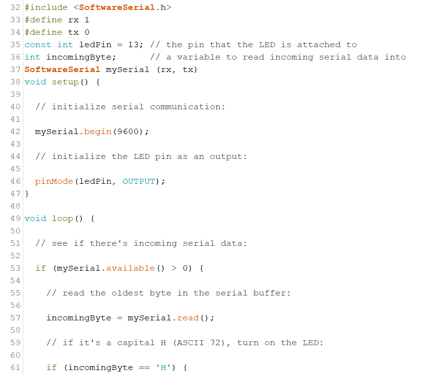
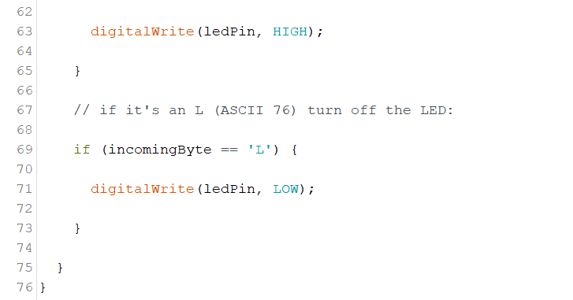

Assignment
Unfortunately, I did not have much time to spare for this assignment to write my own coding or even do the physical connections to my hello board as it was damaged by the rain. Fortunately, I found a preset code online. (Click here to go to PhysicalPixel Code for Arduino-Processing)  
I had to modify the coding a little to suite a Attiny412 board. the rx and tx connections were to be connected using the analog 1 and 2 pins since they were already integrated in the Attiny412. I also had to add SoftwareSerial.h and change all Serial commands to mySerial. This was advice from Gabriel's website.
So how this coding works is that when you mouse is over the grey box, it will turn on the led on the pcb board. Moving the mouse away will turn off the led.

It would have been great to be able to do this physically as it looked really caught my eye when Mr Steven was demoing how these kinds of programs worked. It was just really unfortunate that I was caught in the rain and the shoebox that I put the board in got soaked may have damaged my board or shorted it one way or another. Hopefully I will be able to come back to the fablab and try this out physically in the time to come.